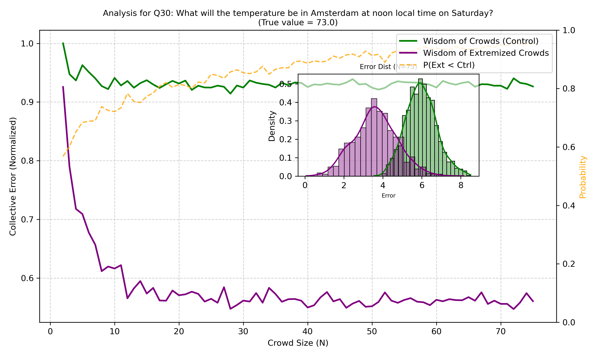
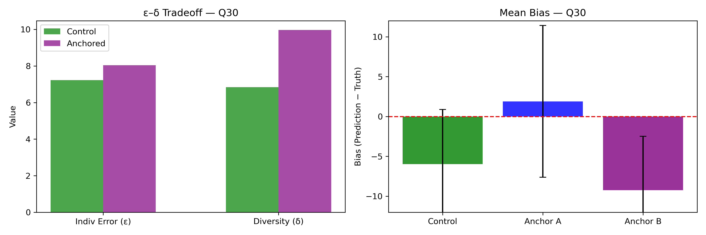
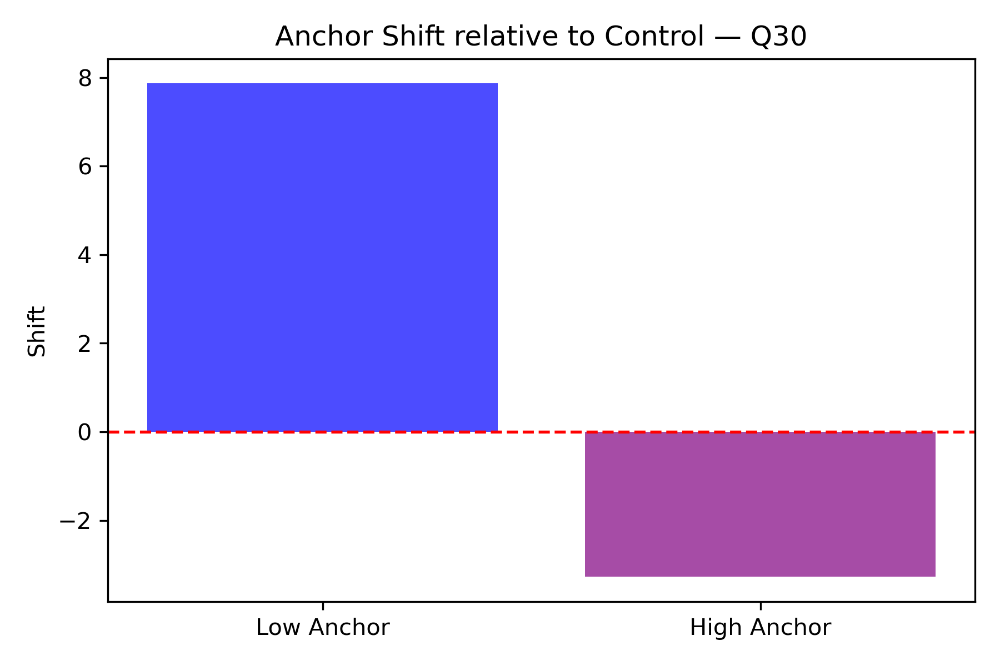
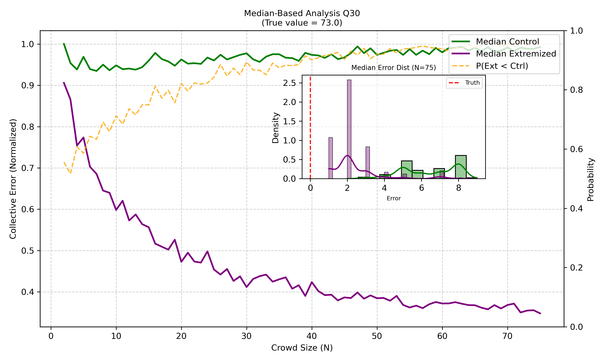
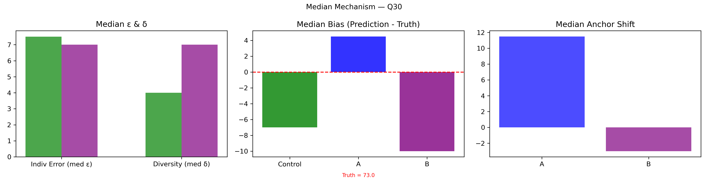

Q30
What will the temperature be in Amsterdam at noon local time on Saturday?
📋 Question Details
| Truth (θ) | 73.0 |
| Low Anchor | 56.0 |
| High Anchor | 81.0 |
📈 DPT Analysis Summary
✓ Yes
Extremization Improved
δ↑ ε↑ E↓
Mechanism
High
Best Condition
E_control = 35.6260 → E_extremized = 12.9600
📋 Full Super Summary (click to expand)
================================================================================ QUESTION Q30: 04_Export_0703_stats_ismbVHVgvY.csv What will the temperature be in Amsterdam at noon local time on Saturday? Truth = 73.0 N_ctrl = 160 N_ext = 75 ================================================================================ [1] MEAN-BASED COLLECTIVE ERROR Ec=5.9629 ± 0.7932, CI=[4.4663,7.6143] Ex=3.6279 ± 1.1224, CI=[1.5067,5.9477] Percent Change = -39.16% Bootstrap P(Ext<Ctrl) = 0.9560 t-test(E): t=53.725, p=0.000000 (SIGNIFICANT (p < .05)) [2] MEAN INDIVIDUAL ERROR (ε) ε_ctrl=7.2062, ε_ext=8.0267 Percent Change = 11.38% Welch t-test p = 0.373 [3] MEAN DIVERSITY (δ) δ_ctrl=6.8469, δ_ext=9.9760 Percent Change = 45.70% Levene p = 0.0006308 [4] ANCHOR DIAGNOSTICS Anchors: A=81.0, B=56.0 Effective: A=False, B=False [5] EQUATION 6 CHECK w_L=0.2968, w_H=0.5629, Δ=27.7690 Criterion_L=None, Criterion_H=None Meets both = True [6] MEAN δ–ε–E SCENARIO Scenario: δ:up, ε:up, E:down Mechanism Explanation: True Barrera extremization: anchors push forecasts apart, increasing both diversity and bias, but opposing biases cancel around the true value 73.0, lowering collective error. ================================================================================ INTERPRETATION — MEAN AGGREGATION ================================================================================ Mean-based collective error changed by -39.16% relative to the true value 73.0. Scenario=δ:up, ε:up, E:down. Equation 6 feasibility=True. ================================================================================ [7] MEDIAN AGGREGATION SUMMARY Median E: 7.0000 → 2.0000 (-71.43%) Median ε: 7.5000 → 7.0000 (-6.67%) Median δ: 4.0000 → 7.0000 (75.00%) Median Scenario: δ:up, ε:down, E:down Mean vs Median: Median agrees with mean. Interpretation: Median indicates anchors moved predictions closer to the true value (73.0). Median t-test p-value = 0.000000 (SIGNIFICANT (p < .05)) [8] MEAN vs MEDIAN — NUMERICAL COMPARISON Mean Scenario: δ:up, ε:up, E:down Median Scenario: δ:up, ε:down, E:down Conclusion: Anchoring effects are consistent across distribution center and tails relative to truth = 73.0. ================================================================================
📊 Mean-Based Barrera Analysis
Distribution comparison showing Control vs Low Anchor vs High Anchor conditions with error analysis using mean estimates. This replicates the B-L methodology.

🔬 Mechanism Analysis
Decomposition of collective error into individual error (ε) and diversity (δ).
Main Mechanism (ε-δ Decomposition)

Anchor Shift Analysis

📈 Median-Based Analysis
Robustness check using median estimates (less sensitive to outliers).
Median Distribution Analysis

Median Mechanism Analysis
